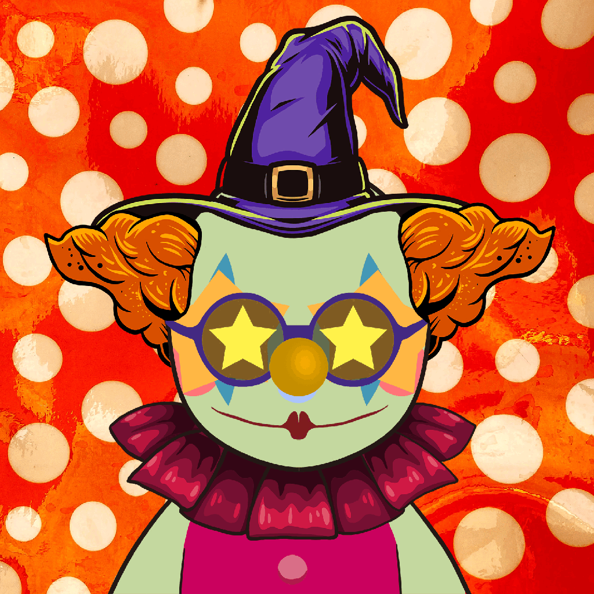
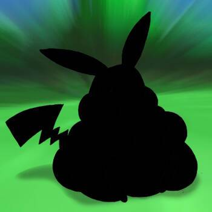

Jesse Boykins III 过去 7 天没有售出 Jesse Boykins III。 在 Sound.XYZ 上创建的 Jesse Boykins III 音乐合集 我们有一些你不想错过的非常令人兴奋的作品！ Jesse Boykins III NFT - 常见问题（FAQ） ▶ 什么是 Jesse Boykins II
Jesse Love Racing Jesse Love 是一名来自加利福尼亚州门洛帕克的 16 岁赛车手。他从 5 岁起就开始参加比赛，并且在他参加过的每个级别比赛中都取得了胜利。15 岁时，Jesse 赢
JiggyVerse JiggyVerse 统计数据 创建于 7 个月前，1,139 代币供应，7.5% 费用 过去 7 天内没有出售任何 JiggyVerse。 JiggyVerse 是一个由 9,444 个独特的、不可替代的 Jiggys 组成
Jill By Molly 吉尔由莫莉 more_horiz Molly 的 Jill 是 888 个独特的 3D NFT 的集合，在 Molly 生态系统中具有多种特权和实用性 4444 独特的 NFTS 我们是M.O.L.L.Y！ 我们是重新评估 3D NFT 艺术的新创
JIN X9 GENESIS JIN X9 是来自外界的 999 个虚灵的起源集合。 金X9 GENESIS统计 创建于 4 个月前，999 代币供应，10% 费用 5,303 名 Discord 成员 JIN X9 GENESIS NFT 在过去 7 天内售出 10 次
Jingle Doge FREE MINT 过去 7 天内没有出售 Degen Labs 的 Jingle Doge。 🐕 3333 个 NFT 🐕 未来 DEGEN 实验室项目的 ALPHA 通行证🐕 JINGLE DOGE 即将成为 SQUISHY DOGE - 元数据和艺术品将于 2022 年 2 月更新 所有 1/1s 将保留为 1/1s -
Jira Punks 吉拉朋克的近期统计 创建于 6 个月前，555 代币供应，6.9% 费用 555 吉拉斯进入朋克世界。555 Jiras 进入朋克世界。注意安全！ Jira Punks NFT - 常见问题（FAQ
Jiujitsu Jerks 柔术抽搐统计 创建于 6 个月前，50 代币供应，10% 费用 过去 7 天没有出售柔术混蛋。 我会接受任何超过 10 美元的报价！对于 NFT 来说，就是哈哈哈 嗨，我的名
JK DAO JK DAO 统计 创建于 10 个月前，1 代币供应，10% 费用 过去 7 天没有出售 JK DAO。 每个 NFT 都授予对独家 JK DAO 社区的访问权限以及对 DAO 资产的投票权。 JK DAO NFT - 常
Jobless Giraffes Official Jobless Giraffe 是 352 个独特的 Jobless Giraffe NFT 的集合，它们都生活在以太坊区块链上。失业长颈鹿的所有权授予您失业长颈鹿的全部创意和商业权利，承诺会员只有福利，并让您进
Joh's World 约翰的世界统计 创建于 2 个月前，6,369 代币供应，7.5% 费用 Joh’s World NFT 在过去 7 天内售出 334 次。Joh’s World 的总销售额为 1.78 万美元。一份
Johnny Depp - VictoryDepp NFT 约翰尼·德普 - VictoryDepp NFT 统计 创建于 3 个月前，1,500 代币供应，0% 费用 过去 7 天没有出售 Johnny Depp - VictoryDepp NFT。 德普的胜利！让我们庆祝强尼战胜安伯·图德的
 Joker is Joking 小丑是在开玩笑统计 创建于大约 2 个月前，380代币供应，7.5% 费用 Joker is Joking NFT 在过去 7 天内售出 2 次。Joker is Joking 的总销售额为 17.24 美元。Joker
 JokeyMonNFT #1368，销售将于 2022 年 9 月 3 日下午 12:03 GMT+8结束 50 个不同的 JokeyMon 角色 NFT x 每个 200 个稀有版本 = 10k 收藏。 没有路线图，没有实用程序，没有不和谐。 为所
Jolly Jalapenos 快乐墨西哥胡椒统计 创建于 9 个月前，380代币供应，10% 费用 过去 7 天没有售出 Jolly Jalapenos。 一群人聚集在一起，决定为 NFT 社区增添节日气氛
Jon Burgerman Jon Burgerman 从事艺术家工作已有 20 多年。 从 DIY 展览空间到博物馆，甚至白宫，他一眼就能认出的艺术作品已在世界各地展出。 他的作品被伦敦维多利亚和阿尔伯特博物
Jonezyboyz 我的 10,000 个 Boyz 都在拉起！ Jonezyboyz NFT 系列为 NFT 空间带来了更好的艺术和更好的表现。 全手绘，独一无二！ 该系列将包括质押、第 2/3 阶段的收益以及在不久的将来 Jonezygurlz Dro
Joocbox GowoonDar MBE 由韩国最优秀的酿酒大师、韩国代表性的高端传统白酒 Mungyeong Oh Minara Lee Jong-ki 的《Kowundal Master Blenders Edition》制作的白酒行业首个 NFT 由 NFT 出版。 Jukebo
Joocbox GowoonDar MBE 由韩国最优秀的酿酒大师、韩国代表性的高端传统白酒 Mungyeong Oh Minara Lee Jong-ki 的《Kowundal Master Blenders Edition》制作的白酒行业首个 NFT 由 NFT 出版。 Jukebo
Joseon Dynasty Omnibus 朝鲜王朝 more_horiz 京东人#901，销售将于 2022 年 9 月 1 日下午 2:14 GMT+8结束 ，朝鲜王朝第901大人。朝鲜王朝第901代人。 欢迎来到神秘的朝鲜王朝。朝鲜
Josh Pierce - Peace 乔什·皮尔斯数据 创建于 1 年多前，1,360 代币供应，10% 费用 过去 7 天没有出售 Josh Pierce。 Nifty Gateway 的 Josh Pierce 的系列。 皮尔斯专注于超现实和自然主题
Joweys Official Collection Joweys 是以太坊区块链上最伟大的 PFP 的集合。 没有白名单，没有 Discord，没有路线图，也没有虚假承诺。 Joweys 是以太坊区块链上最伟大的 PFP 的集合。 Joweys 官方合
Joy Fellaz 乔伊费拉兹数据 创建于 7 个月前，1,943 代币供应，7.5% 费用 过去 7 天没有售出 Joy Fellaz。 Joy Fellaz 是 2222 件色彩缤纷的艺术品的独特收藏。每一个都
JPG PEOPLE by Debbie Tea JPG PEOPLE by Debbie Tea 统计 创建于 8 个月前，8,888 代币供应，8% 费用 7,490 名 Discord 成员 JPG PEOPLE by Debbie Tea NFTs 在过去 7 天内售出 37 次。Debbie Tea 的 JPG PEOPLE 的总销售额为 819.93 美元
JRF-MICA JRF-MICA 是 James Richard Fry 的多媒体生成艺术系列。 粉笔水玻璃矢量生成 1,111 个独特的部分。 所有原始创世纪铸币者都会收到与他们的 NFT 相关的 18X24 艺术品，装裱并签名。 JRF-
JRNY Club Reward Collection JRNY俱乐部统计 创建于 9 个月前 10 ,000 代币供应 OpenSea 验证集合 7.5% 费用 73,536 名 Discord 成员 刷新 JRNY Club NFT 在过去 7 天内售出 158 次。JRNY Club 的总销售额为 12.271 万美元。一个 JRNY
JRNY Club Rewards Collection JRNY 俱乐部奖励收集统计 创建于 5 个月前，2 代币供应，7.5% 费用 73,536 名 Discord 成员 JRNY Club Rewards Collection NFT 在过去 7 天内售出 48 次。JRNY Club Rewards Collection 的总销售额为 4.13 万美元。一
Jrrdan Factory Jrrdan工厂统计 创建于 5 个月前，25代币供应，10% 费用 过去 7 天内没有出售 Jrrdan 工厂。 一系列带有可兑换礼物的版本！ Jrrdan Factory NFT - 常见问题（FAQ）
Juicy Fruits Genesis 多汁水果创世纪统计数据 创建于 5 个月前，777代币供应，5% 费用 Juicy Fruits Genesis NFT 在过去 7 天内售出 1 次。Juicy Fruits Genesis 的总销售额为 0.55 美元。一份 Juicy Fruits Genesis NFT 的
Juicy J's Journey Juicy J的旅程 Juicy J 和 ASTERISK* 与 Everipedia (IQ) 合作推出了 Juicy J’s Journey，这是一个限量的 NFT 集合，以庆祝 Juicy J 的最新专辑 The Hustle Still Continues 的推出。该系列使用区块链技术、数字艺
Juicy J's Journey NFT Drop Juicy J的旅程 Juicy J 和 ASTERISK* 与 Everipedia (IQ) 合作推出了 Juicy J’s Journey，这是一个限量的 NFT 集合，以庆祝 Juicy J 的最新专辑 The Hustle Still Continues 的推出。该系列使用区块链技术、数字艺
Juki Sammy Juki Sammy-介绍： 一共是6666暑假SAMMY合集，随机生成。起风了 JukiSammy #3534 拥有者： [THE_GRINCH] 日程：销售将于 2022 年 8 月 30 日下午 5:03 GMT+8结束 一共是66
Jungle by ESCAPEPLAN ESCAPEPLAN 和 Rich the Kid 的“Jungle”官方 NFT 合集在 Big Night Records 上发布。每个 NFT 代表唱片大师的一定比例，持有者有权在持有者的以太坊地址中获得与 Jungle NFT 相关的累积净艺
Jungle Freaks Motor Club JFMC Jungle Freaks Motor Club NFT 在过去 7 天内售出 20 次。Jungle Freaks Motor Club 的总销售额为 747.74 美元。Jungle Freaks Motor Club NFT 的平均价格为 37.4 美元。有 2,722 名 Jungle Freaks Motor Club 车主，总共拥有 8,888
Junior Punks' 少年朋克统计 创建于 8 个月前，5,555 代币供应，8% 费用，4,630 位推特关注者 Junior Punks NFT 在过去 7 天内售出 20 次。Junior Punks 的总销售额为 $1.
Junipers Last Gasp Juniper’s Last Gasp 及其信息超越了这棵特定的树，因为它分享了不断增长的威胁的故事，这些威胁包括我们的水域、陆地、空气和居住在我们 🌎 星球上的生物。 杜松树在最
Junkie Catz 多边形区块链上的 4444 个 DE 生成头像。Junkie Catz 是对一些不幸的猫科动物爱好者的创造性艺术描绘 - 由 NFT 狂热者团队创作。 这件艺术品在 Polygon Network 上铸造，独一
Just a GIRL Collection. 女孩是富有表现力和独特的。她们到处都是普通的女孩，但世界上只有她们一个。 只是一个女孩系列。NFT - 常见问题（FAQ） ▶ 什么是 Just a GIRL 系列。？ 只
Just A Square OFFICIAL 只是一个正方形是 2000 个正方形的惊人集合！起初区块链只是正方形。加入我们和薄荷。没有路线图，没有公用事业，但我们的持有者有很多惊喜 Just A Square 官方 NFT -
Just Ape NFT Collection Official 只是猿。10,000 只 Apes 的集合，让我们回归基础。没有绒毛，所有的价值。 第 1 季：宽限期结束 猿人， 如果您现在正在阅读本文，则意味着我们已经正式跨


 合作推出了 Juicy J's Journey，这是一个限量的 NFT 集合，以庆祝 Juicy J 的最新专辑 The Hustle Still Continues 的推出。")
 合作推出了 Juicy J's Journey，这是一个限量的 NFT 集合，以庆祝 Juicy J 的最新专辑 The Hustle Still Continues 的推出。")